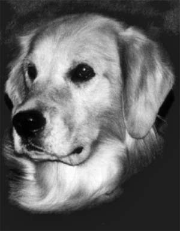

Home to the Rocky Mountain Region's Top Golden Retrievers
 |
Ch. Crystal Peaks Lady Of Illusion (OD)- Retta |
Sue started training dogs for the show ring in 8th grade - earning a CDX on her first Irish Setter Shanty. That was the beginning of the end! In 1976 she acquired her first Golden Retriever - Tara Sundance's Tawny Tara CDX who became one of the foundation bitches of Crystal Glen. Tara produced our first Outstanding Dam Retta. The second foundation bitch was from Smithaven kennels - Tammy. Ch. Smithaven's Here We Go Again (OD), who also became an Outstanding Dam the second of 6 that Crystal Glen has produced. In recent years we have added 3 Outstanding Sires to our list of accomplishments. With that beginning Sue has had the help of Willi her husband and her best friend Lucy - together they have put 45 + years of dog experience, success, history, and special talents that have produced our exceptional Golden Retrievers. Crystal Glen has become one of the top Golden Retriever kennels in the Rocky Mountain Region. We have over 50 American and Canadian Champions, too numerous to count obedience titles Including several High in Trial obedience dogs in the United States and Canada, with several dogs being invited to National Obedience competitions. Our dogs also compete in agility with a flair. Many have had great success - including Aria who was Crystal Glen's first Agility Champion. Adding a second agility champion in 2022 - Mclain. Continuing to show versatility besides what has already been mention our dogs compete in field and tracking scent work, and dock diving. As well as having the privilege of having three dogs used by Guide Dogs for the Blind, San Rafael, CA. One of them became a stud in their breeding program, a fact we are very proud of! Sue and Willi were professional handlers of all breeds showing and competing with 74 different breeds of dogs. We have shown 10 different breeds to the top of the charts. In obedience we have trained and showed 20+ different breeds to their obedience titles. As instructors of both obedience and conformation we have had the privilege of helping literally hundreds of people obtain their obedience and conformation titles on their dogs. So as you can see we strive to produce the best that can be produced. We do not try market a "gimmick" - a product such as an English Creme or a GoldenDoodle, we produce heirloom Golden Retrievers. Sticking with tradition, the way they were meant to be |
Crystal Glen 2025 - all rights reserved |